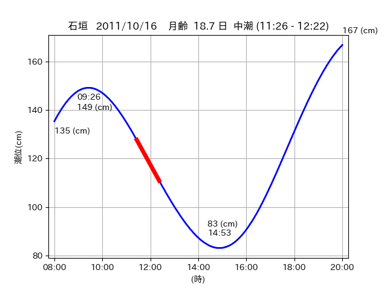
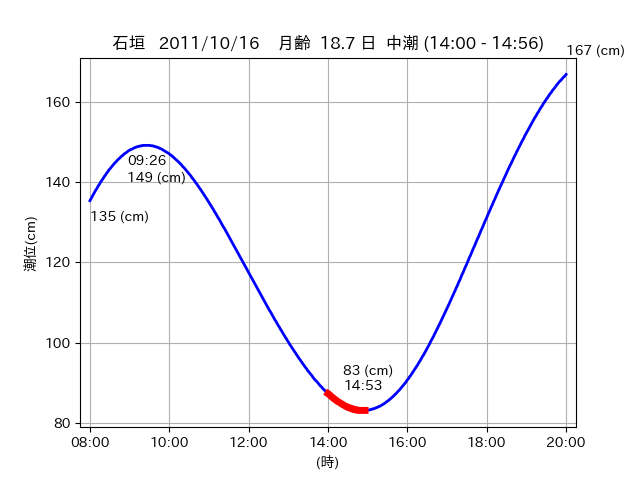

<!DOCTYPE html>
<html>
<head>
    
    <meta http-equiv="content-type" content="text/html; charset=UTF-8" />
    
        <script>
            L_NO_TOUCH = false;
            L_DISABLE_3D = false;
        </script>
    
    <style>html, body {width: 100%;height: 100%;margin: 0;padding: 0;}</style>
    <style>#map {position:absolute;top:0;bottom:0;right:0;left:0;}</style>
    <script src="https://cdn.jsdelivr.net/npm/leaflet@1.9.3/dist/leaflet.js"></script>
    <script src="https://code.jquery.com/jquery-3.7.1.min.js"></script>
    <script src="https://cdn.jsdelivr.net/npm/bootstrap@5.2.2/dist/js/bootstrap.bundle.min.js"></script>
    <script src="https://cdnjs.cloudflare.com/ajax/libs/Leaflet.awesome-markers/2.0.2/leaflet.awesome-markers.js"></script>
    <link rel="stylesheet" href="https://cdn.jsdelivr.net/npm/leaflet@1.9.3/dist/leaflet.css"/>
    <link rel="stylesheet" href="https://cdn.jsdelivr.net/npm/bootstrap@5.2.2/dist/css/bootstrap.min.css"/>
    <link rel="stylesheet" href="https://netdna.bootstrapcdn.com/bootstrap/3.0.0/css/bootstrap-glyphicons.css"/>
    <link rel="stylesheet" href="https://cdn.jsdelivr.net/npm/@fortawesome/fontawesome-free@6.2.0/css/all.min.css"/>
    <link rel="stylesheet" href="https://cdnjs.cloudflare.com/ajax/libs/Leaflet.awesome-markers/2.0.2/leaflet.awesome-markers.css"/>
    <link rel="stylesheet" href="https://cdn.jsdelivr.net/gh/python-visualization/folium/folium/templates/leaflet.awesome.rotate.min.css"/>
    
            <meta name="viewport" content="width=device-width,
                initial-scale=1.0, maximum-scale=1.0, user-scalable=no" />
            <style>
                #map_5055f1b418b702331646a8d797deee37 {
                    position: relative;
                    width: 2048.0px;
                    height: 1600.0px;
                    left: 0.0%;
                    top: 0.0%;
                }
                .leaflet-container { font-size: 1rem; }
            </style>
        
</head>
<body>
    
    
            <div class="folium-map" id="map_5055f1b418b702331646a8d797deee37" ></div>
        
</body>
<script>
    
    
            var map_5055f1b418b702331646a8d797deee37 = L.map(
                "map_5055f1b418b702331646a8d797deee37",
                {
                    center: [24.211, 124.008],
                    crs: L.CRS.EPSG3857,
                    ...{
  "zoom": 12,
  "zoomControl": true,
  "preferCanvas": false,
}

                }
            );

            

        
    
            var tile_layer_278613a225c08be61606c28c4afec539 = L.tileLayer(
                "https://cyberjapandata.gsi.go.jp/xyz/seamlessphoto/{z}/{x}/{y}.jpg",
                {
  "minZoom": 0,
  "maxZoom": 18,
  "maxNativeZoom": 18,
  "noWrap": false,
  "attribution": "\u5730\u7406\u9662\u5730\u56f3",
  "subdomains": "abc",
  "detectRetina": false,
  "tms": false,
  "opacity": 1,
}

            );
        
    
            tile_layer_278613a225c08be61606c28c4afec539.addTo(map_5055f1b418b702331646a8d797deee37);
        
    
            var marker_db36fd0ac90584d63e1515b990fbae07 = L.marker(
                [24.2178, 123.9423],
                {
}
            ).addTo(map_5055f1b418b702331646a8d797deee37);
        
    
            var icon_b2b2bf1dc2a4188c3f1b3249e7cd2c02 = L.AwesomeMarkers.icon(
                {
  "markerColor": "orange",
  "iconColor": "white",
  "icon": "info-sign",
  "prefix": "glyphicon",
  "extraClasses": "fa-rotate-0",
}
            );
        
    
        var popup_6aab02b5a36363856923338f772955f0 = L.popup({
  "maxWidth": "100%",
});

        
            
                var html_5c4eb62f0509b1b99370824e98bb3941 = $(`<div id="html_5c4eb62f0509b1b99370824e98bb3941" style="width: 100.0%; height: 100.0%;"><table><tr><td></td></tr><tr><td><center>20111016 No.1 </center></table></td></tr></table</div>`)[0];
                popup_6aab02b5a36363856923338f772955f0.setContent(html_5c4eb62f0509b1b99370824e98bb3941);
            
        

        marker_db36fd0ac90584d63e1515b990fbae07.bindPopup(popup_6aab02b5a36363856923338f772955f0)
        ;

        
    
    
                marker_db36fd0ac90584d63e1515b990fbae07.setIcon(icon_b2b2bf1dc2a4188c3f1b3249e7cd2c02);
            
    
            var poly_line_2e9af1a78a7e9bc159b4505cf0cd277d = L.polyline(
                [[24.2178, 123.9423], [24.2036, 123.9397]],
                {"bubblingMouseEvents": true, "color": "#00FFFF", "dashArray": null, "dashOffset": null, "fill": false, "fillColor": "#00FFFF", "fillOpacity": 0.2, "fillRule": "evenodd", "lineCap": "round", "lineJoin": "round", "noClip": false, "opacity": 1.0, "smoothFactor": 1.0, "stroke": true, "weight": 3}
            ).addTo(map_5055f1b418b702331646a8d797deee37);
        
    
            var marker_76b2ddef0a8a5b0a1021967bbc77e41d = L.marker(
                [24.2105, 123.917],
                {
}
            ).addTo(map_5055f1b418b702331646a8d797deee37);
        
    
            var icon_ff6bb9cc98ec309ebcf7b4ec700fbb01 = L.AwesomeMarkers.icon(
                {
  "markerColor": "orange",
  "iconColor": "white",
  "icon": "info-sign",
  "prefix": "glyphicon",
  "extraClasses": "fa-rotate-0",
}
            );
        
    
        var popup_59fa54460a50dedb4ce166a825853b73 = L.popup({
  "maxWidth": "100%",
});

        
            
                var html_88dd5db8e1c8891d33a2205c6cb21663 = $(`<div id="html_88dd5db8e1c8891d33a2205c6cb21663" style="width: 100.0%; height: 100.0%;"><table><tr><td></td></tr><tr><td><center>20111016 No.2 </center></table></td></tr></table</div>`)[0];
                popup_59fa54460a50dedb4ce166a825853b73.setContent(html_88dd5db8e1c8891d33a2205c6cb21663);
            
        

        marker_76b2ddef0a8a5b0a1021967bbc77e41d.bindPopup(popup_59fa54460a50dedb4ce166a825853b73)
        ;

        
    
    
                marker_76b2ddef0a8a5b0a1021967bbc77e41d.setIcon(icon_ff6bb9cc98ec309ebcf7b4ec700fbb01);
            
    
            var poly_line_2f7b1305f1d488e0a948d5d502513438 = L.polyline(
                [[24.2105, 123.917], [24.2162, 123.9085]],
                {"bubblingMouseEvents": true, "color": "#FF00FF", "dashArray": null, "dashOffset": null, "fill": false, "fillColor": "#FF00FF", "fillOpacity": 0.2, "fillRule": "evenodd", "lineCap": "round", "lineJoin": "round", "noClip": false, "opacity": 1.0, "smoothFactor": 1.0, "stroke": true, "weight": 3}
            ).addTo(map_5055f1b418b702331646a8d797deee37);
        
    
            var marker_9aa1c23eb709bde9e0c694c91c7f8be1 = L.marker(
                [24.2125, 124.0039],
                {
}
            ).addTo(map_5055f1b418b702331646a8d797deee37);
        
    
            var icon_3f9e1271fe9872fc1b33538264203796 = L.AwesomeMarkers.icon(
                {
  "markerColor": "orange",
  "iconColor": "white",
  "icon": "info-sign",
  "prefix": "glyphicon",
  "extraClasses": "fa-rotate-0",
}
            );
        
    
        var popup_8b9957f1123f9218843c1964921bfdd1 = L.popup({
  "maxWidth": "100%",
});

        
            
                var html_4b0c267f29b07537e8c1da28f314c68d = $(`<div id="html_4b0c267f29b07537e8c1da28f314c68d" style="width: 100.0%; height: 100.0%;"><table><tr><td></td></tr><tr><td><center>20111016 No.3 </center></table></td></tr></table</div>`)[0];
                popup_8b9957f1123f9218843c1964921bfdd1.setContent(html_4b0c267f29b07537e8c1da28f314c68d);
            
        

        marker_9aa1c23eb709bde9e0c694c91c7f8be1.bindPopup(popup_8b9957f1123f9218843c1964921bfdd1)
        ;

        
    
    
                marker_9aa1c23eb709bde9e0c694c91c7f8be1.setIcon(icon_3f9e1271fe9872fc1b33538264203796);
            
    
            var poly_line_cafc4720d52641d2428c1a69537d2992 = L.polyline(
                [[24.2125, 124.0039], [24.2103, 124.0117]],
                {"bubblingMouseEvents": true, "color": "#00FFFF", "dashArray": null, "dashOffset": null, "fill": false, "fillColor": "#00FFFF", "fillOpacity": 0.2, "fillRule": "evenodd", "lineCap": "round", "lineJoin": "round", "noClip": false, "opacity": 1.0, "smoothFactor": 1.0, "stroke": true, "weight": 3}
            ).addTo(map_5055f1b418b702331646a8d797deee37);
        
</script>
</html>